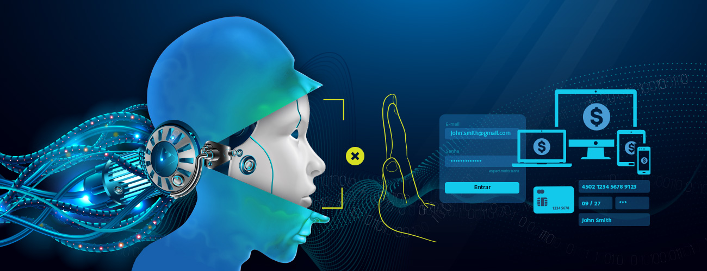

Voltar para Notícias e Artigos


Combata fraudes impulsionados por IA com defesas automatizadas multicamadas.
A paisagem digital está em constante mudança. Com os rápidos avanços em inteligência artificial e aprendizado de máquina, o mundo tem visto um aumento sem precedentes em ameaças cibernéticas sofisticadas. O processo para fraudadores criarem provas de identidade deepfake, bots astutos e desde dublagens artificiais até avatares de vídeo está se tornando mais fácil do que nunca.
O relatório de mitigação de bots de 2023 revela que 89% das empresas globalmente acreditam que fraudes impulsionadas por IA ameaçarão suas organizações nos próximos 12 meses. À medida que os fraudadores empregam IA para aprimorar suas táticas enganosas, torna-se crucial para empresas e organizações reforçar seus mecanismos de prevenção de fraudes. Uma estratégia poderosa para gerenciar esse desafio em evolução é a adoção de defesas multicamadas.
O imperativo do KYC perpétuo
Conhecer Seu Cliente (KYC) não é mais um processo único. A dinâmica digital em constante mudança exige uma abordagem contínua, ou perpétua, de KYC. O objetivo é direto, mas profundo: manter um perfil atualizado de cada cliente ao longo de seu ciclo de vida. Este método garante que qualquer atividade incomum, que inicialmente possa parecer insignificante, não passe despercebida. Tal sistema perpétuo pode detectar discrepâncias emergentes de perfis falsos gerados por IA, garantindo que apenas usuários genuínos acessem plataformas e realizem transações digitais.
KYC multicamadas: Um escudo contra deepfakes e bots
A sofisticação das fraudes impulsionadas por IA ultrapassou limites anteriormente considerados invencíveis. Deepfakes, por exemplo, podem criar vídeos realistas de pessoas reais dizendo ou fazendo coisas que nunca fizeram. Com sua inteligência crescente, bots podem imitar comportamentos humanos a um grau preocupante.
Dado esses desafios, um processo de KYC multicamadas torna-se indispensável. Tal estrutura não se baseia apenas em verificações de dados estáticos. Em vez disso, enfatiza modelos de autenticação como vídeo ao vivo, onde os usuários devem provar sua vivacidade em tempo real para códigos PIN ou respostas baseadas em conhecimento. Além disso, realizar KYC nos bastidores em impressão digital de dispositivo, geo e IP para envolver transações com verificações de tipo de pagamento para emissor de cartão e dados de nível/tipo de cartão até inteligência de blockchain. Estes colocam protocolos de segurança rigorosos para garantir a verificação e transações de apenas indivíduos vivos e genuínos são processados.
Aproveitando um motor de risco avançado
A detecção de fraudes não é apenas sobre identificar ações suspeitas, mas prevê-las. É aqui que um motor de risco avançado entra em jogo. Ao aproveitar milhares de parâmetros e inúmeras configurações, tais motores podem discernir até os padrões fraudulentos mais ocultos.
Fazendo parceria com um fornecedor de dados e risco completo como a AcuityTec, as empresas podem definir limiares de risco personalizados adaptados à sua indústria e demografia específicas. Por exemplo, uma transação de alto valor de uma região com volumes de transação historicamente baixos pode acionar um alerta. Regras de risco em torno da evasão de impressão digital de dispositivo ou geolocalização acionariam risco. As empresas podem estabelecer inúmeros algoritmos de regras de risco avançadas para apoiar jornadas de clientes e configurá-los para regiões específicas, métodos de pagamento, tendências e mais.
Tais motores podem ser estáticos ou como o da AcuityTec, que aproveita regras de risco estáticas apoiadas por aprendizado de máquina que continuamente aprende com dados históricos. Ao detectar padrões, analisar comportamentos e entender tendências, essa tecnologia garante que os mecanismos de prevenção de fraudes permaneçam adaptativos a novas e emergentes ameaças.
Aprendizado de máquina: A pedra angular da prevenção de fraudes adaptativa
O aprendizado de máquina é uma ferramenta transformadora no arsenal contra ameaças cibernéticas. Ele pode identificar inconsistências que podem escapar de verificações manuais, analisando vastos conjuntos de dados. Mais importante ainda, algoritmos de aprendizado de máquina podem se adaptar à medida que novas táticas fraudulentas emergem, garantindo que permaneçam eficazes neste jogo incessante de gato e rato.
Considere um cenário onde um fraudador emprega uma nova técnica para burlar verificações de verificação tradicionais. Ao encontrar essa novidade, um sistema impulsionado por aprendizado de máquina analisaria o padrão e o correlacionaria com outros pontos de dados e a pontuação de risco gerada para classificá-lo como fraude. O sistema pode se adaptar rapidamente e sinalizar tais tentativas no futuro, tornando o mecanismo de defesa totalmente automatizado e em constante evolução. As empresas são capacitadas com confiança e engajamentos confiáveis com clientes, permanecendo ágeis na defesa contra fraudes, independentemente de nossa evolução online.
Parceria com provedores abrangentes de defesa contra fraudes
A colaboração é uma arma potente contra fraudes. Visões fragmentadas de risco permitem que fraudadores passem despercebidos. Quando você faz parceria com um provedor de dados e risco totalmente empilhado como a AcuityTec, você não só obtém todos os serviços KYC necessários, mas tudo para realizar algoritmos avançados de risco até a defesa adaptativa de aprendizado de máquina e, o mais notável, uma visão harmonizada de risco e relatórios. Tal perspectiva é inestimável para garantir que não haja bandeiras vermelhas não detectadas.
Além disso, esses provedores trazem automação para a mesa, aumentando significativamente a velocidade e a eficiência da detecção de fraudes. O monitoramento transacional em tempo real garante que qualquer atividade suspeita seja imediatamente sinalizada, permitindo intervenções oportunas antes do processamento e perda de fundos. Esta agilidade é essencial na era digital, onde cada segundo pode distinguir entre uma tentativa de fraude bem-sucedida e sua prevenção oportuna.
Em conclusão
Fraudes impulsionadas por IA são adversárias formidáveis. No entanto, com uma estratégia de defesa robusta e multicamadas, as empresas podem se defender contra ameaças atuais e se adaptar a desafios futuros. As ferramentas estão disponíveis, desde KYC perpétuo até motores de risco avançados e insights de aprendizado de máquina. Com provedores como a AcuityTec, é uma única API para garantir um ecossistema digital seguro e confiável.
Sobre a AcuityTec
AcuityTec é uma provedora líder especializada em KYC global, KYB, conformidade e defesa avançada contra fraudes com monitoramento em tempo real, tudo através de uma única API. Desde o início até a verificação e monitoramento de transações, personalize sua mitigação de risco de ponta a ponta para uma proteção contra fraudes inigualável, a fim de garantir a segurança dos clientes e proteger as receitas.
Para mais informações, agende uma demonstração ou entre em contato com um representante de vendas em sales@acuitytec.com hoje.